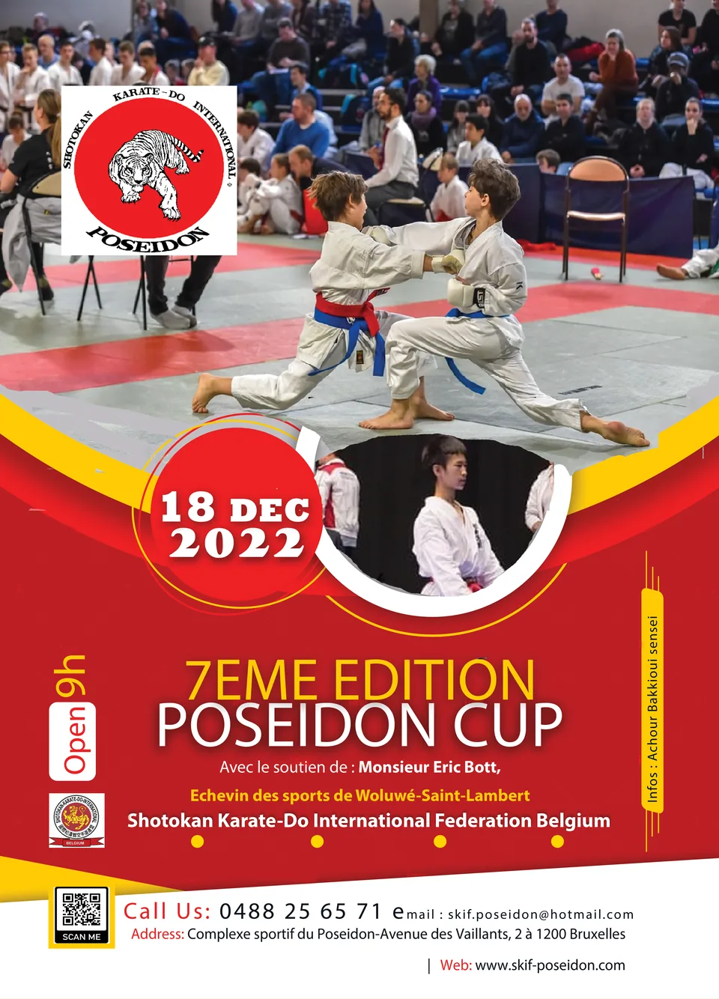
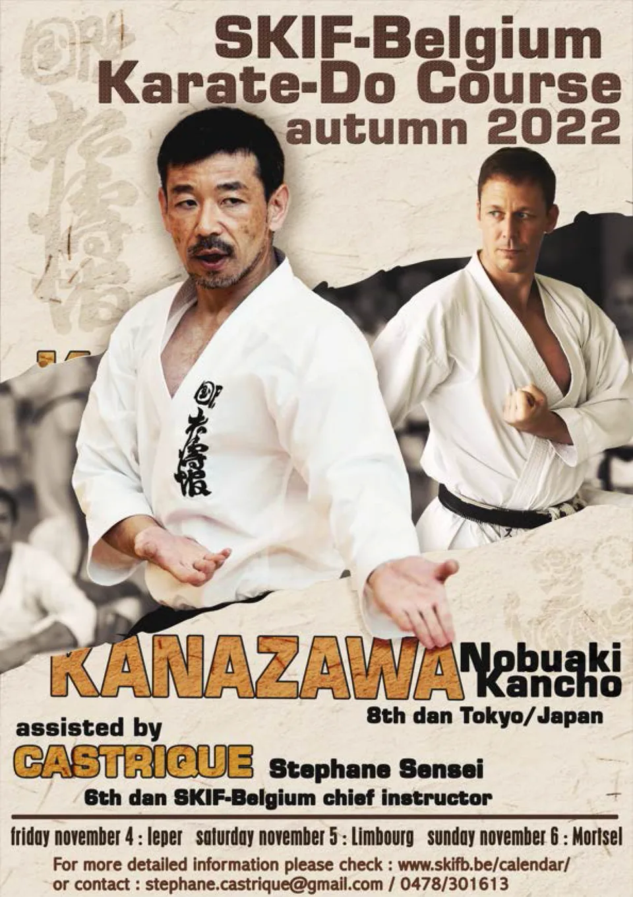

Poseidon Cup 2022, 18 décembre
Compétition nationale SKIF Belgium au complexe Poseidon, de 9:00 à 18:00.
Toute la vie du dojo, année par année. Les stages, les compétitions, les moments du club et les infos pratiques.

Compétition nationale SKIF Belgium au complexe Poseidon, de 9:00 à 18:00.

Cours ouvert à tous les niveaux avec Kancho Kanazawa, 8e dan, au Sporthal d'Ieper.

Les podiums du club au championnat d'Europe SKIF 2022.

La participation de l'équipe de Belgique, classée 6e dans ses catégories selon le club (à confirmer).
Aucun article de ce type en 2022.